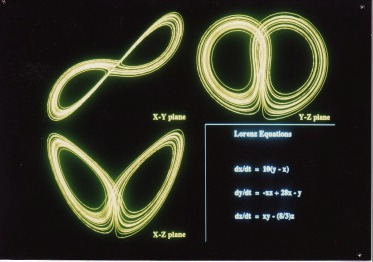
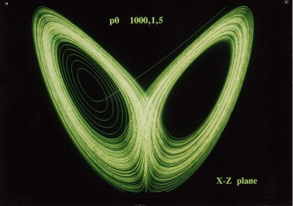
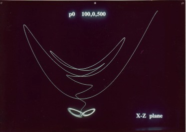
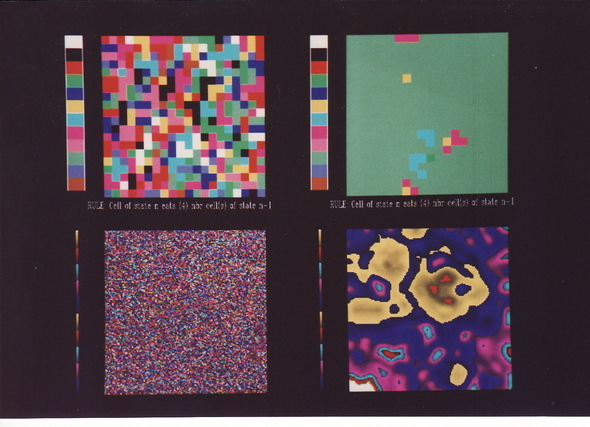
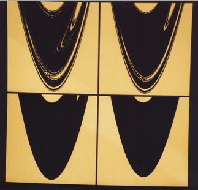
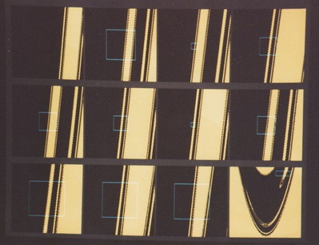

Dynamical Systems
In addition to the usual core coursework in Mathematics (linear alg, vector calc,
real/complex analysis, PDEs, etc), I joined
a newly formed dynamical systems group at Arizona State U. in the late
1980s.
While it might not have been the most lucrative long-term decision to voluntarily leave the
PhD Computer Science program for the Mathematics Dept, I have no regrets.
It turned out to be a lot of fun - combining numerical analysis with interactive computer
graphics/visualization (using "supercomputers" from Stardent).
I show a nostalgic set of images from a few projects at the time.
I say 'nostalgic' because, like many students of dynamical
systems, I spent countless number of hours on the computer playing with these beautiful objects.
While I could have
regenerated newer, cleaner images, it just wouldn't have the same appeal (to me anyway :).
Also, see my thesis from ASU.



Lorenz attractor

Cellular automata (top: coarse grid, bottom: finer grid) - most likely based on the 1988
Scientific American "Computer Recreations article of Dewdney.


Basin of attraction (in black) for Henon attractor - in successively fine detail (bottom-right to top-left, top
panel) and zooming in on regions (lower panel).